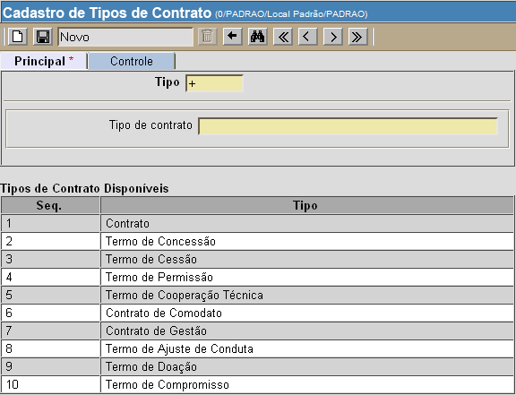

Parâmetros de Contratos [ Voltar ]Utilize este formulário para editar tipos de contratos, categorias, recebedores do alerta de término de vigência e email da coordenação de contratos. O formulário "Parâmetros de contratos" encontra-se no menu "Contratos". Após clicar no formulário, o sistema abrirá a seguinte tela: Clique na opção exibida na tela referente aos parâmetros que deseja editar: 1. Cadastro de tipos de contrato 2. Cadastro de categorias de contratos 3. Parâmetros de email Cadastro de tipos de contratoApós clicar no link "Cadastro de tipos de contratos", a seguinte tela será exibida: 
1° Passo: no campo "Tipo de contrato", informe o nome do tipo de contrato que deseja cadastrar. O primeiro campo, "Tipo", apresenta um sinal de "+" por padrão. Assim, quando o cadastro é salvo, é-lhe atribuído o próximo número de tipo disponível. 2° Passo: clique no botão  para
concluir o cadastro. Após salvar o cadastro, o novo tipo
de contrato será exibo na parte inferior da tela, na lista "Tipos de
Contrato Disponíveis". para
concluir o cadastro. Após salvar o cadastro, o novo tipo
de contrato será exibo na parte inferior da tela, na lista "Tipos de
Contrato Disponíveis".Cadastro de categorias de contratosApós clicar no link "Cadastro de categorias de contratos", a seguinte tela será exibida: 1° Passo: selecione o tipo de contrato para o qual deseja criar uma nova categoria. Observação: o campo "Cód. da categoria" apresenta um sinal de "+" por padrão. Assim, quando a categoria é salva, é-lhe atribuído o próximo número de categoria disponível. 2° Passo: informe no campo "Categoria" a descrição da mesma. Marque a opção "Relacionada ao cadastro de produtos" se desejar que os códigos dos produtos que fazem parte do contrato devam ser inseridos no ato do cadastro do contrato. 3° Passo: clique no botão para
concluir o cadastro. Após salvar o cadastro, a nova
categoria será exiba na parte inferior da tela, na lista "Categorias de
Contrato Disponíveis".Parâmetros de emailApós clicar no link "Parâmetros de email", a seguinte tela será exibida: 1° Passo: informe os emails da coordenação de contratos e dos recebedores. Os usuários cujos emails são especificados neste formulário receberão informações do alerta de término de vigência dos contratos. 2° Passo: clique no botão para
salvar as informações. |